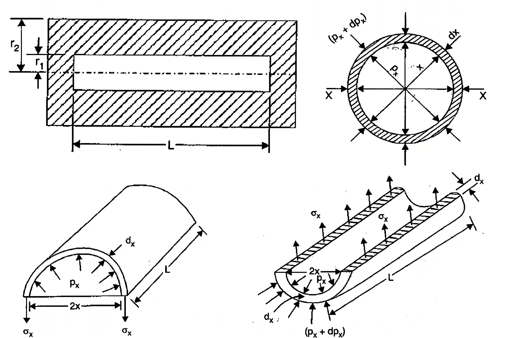

Lamé’s equations give the radial pressure and circumferential (hoop) stress at any radius of a thick cylinder.
Let \(r_1\) = internal radius, \(r_2\) = external radius, \(L\) = cylinder length, \(x\) = radius of an elementary ring, \(dx\) = its thickness, \(p_x\) = radial compressive pressure at radius \(x\), and \(\sigma_x\) = circumferential tensile stress at radius \(x\).

Consider a ring of thickness \(dx\) and length \(L\). The inner radial pressure is \(p_x\); the outer radial pressure is \(p_x+dp_x\).
Here the second-order product \(dp_x\,dx\) is neglected.
Equating the resisting and bursting forces:
For a long, uniform cylinder away from end restraints, longitudinal strain is constant. Let \(\sigma_l\) be the constant longitudinal stress, \(E\) Young’s modulus, and \(\mu\) Poisson’s ratio.
Substituting (iv) into (iii):
Therefore the Lamé equations, using radial pressure positive in compression, are:
Here \(a\) and \(b\) are constants obtained from boundary conditions. For internal pressure \(p_0\) and zero external gauge pressure:
Sign convention: \(p_x\) denotes compressive radial pressure, so the signed radial stress is \(\sigma_r=-p_x\). Hoop tension \(\sigma_x\) is positive.
| Parameter | Thin Cylinder | Thick Cylinder |
|---|---|---|
| Geometric Criterion | Thickness to inner diameter ratio \( t/d_i \le 1/20 \) | Thickness to inner diameter ratio \( t/d_i > 1/20 \) |
| Hoop Stress (\(\sigma_\theta\)) | Assumed uniform across the entire wall thickness. | Non-uniform; varies hyperbolically, max at inner radius. |
| Radial Stress (\(\sigma_r\)) | Negligible (\(\sigma_r \approx 0\)) relative to hoop stress. | Significant; varies from internal pressure to external pressure. |
| Stress State | Biaxial (Plane stress state) | Triaxial (3D stress state) |
| Governing Theory | Membrane Theory / Equilibrium | Lamé's Theory |
Hoop Stress (\(\sigma_h\)):
Longitudinal Stress (\(\sigma_l\)):
Hoop Strain (\(\epsilon_h\)):
Longitudinal Strain (\(\epsilon_l\)):
Volumetric Strain (\(\epsilon_v\)):
Change in Diameter (\(\delta d\)):
Change in Length (\(\delta L\)):
Change in Volume (\(\delta V\)):
At the inner surface \(x=r_1=62.5\ \mathrm{mm}\), \(p_x=p_0=50\ \mathrm{MPa}\). At the outer surface \(x=r_2=125\ \mathrm{mm}\), \(p_x=0\).
Hence, with \(x\) measured in millimetres:
The hoop stress decreases with increasing radius; therefore the maximum occurs at the inner surface and the minimum at the outer surface.
Minimum hoop stress: \(\boxed{33.33\ \mathrm{MPa}}\) (outer surface)

Check for thin cylinder: \(t/d = 10/1000 = 1/100 \le 1/20\). Membrane theory applies.